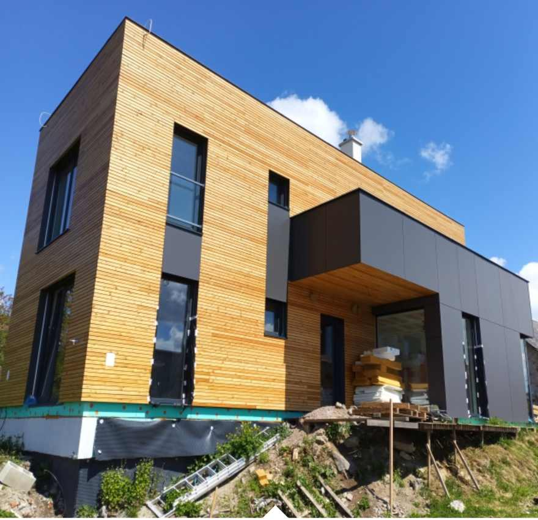

07 / 09 · Realizácie · 2008 → 2024
2024 · Domy, drevostavby, interiéry
Rodinný dom Lúčina, okr. Prešov
Rhombus fasáda a dosky Fundermax. Difúzne otvorená stavba, od základov po interiér. Užívali sme si to!
Začalo to vlastným domčekom.
Osem realizácií od Žiliny po Kéked. Každá je fotená z lešenia, nie z katalógu — presne tak, ako vznikala.
2008
Moja prvotina: náš domček
Tak týmto to všetko začalo. Drevodom postavený podľa knižiek a rád od kamarátov.
2015
Budatín pri Žiline
Fasáda zo surového cetrisu. Cool, nie? Zateplenie na báze drevných vlákien.
2019
Luxusná terasa, Chrastné
Bonbónikom bola strecha zo skla. Ufff. Ale čo už — máme radi výzvy.
2021
Bungalov v Prešove
Milý bungalov na minimalistickom pozemku. Členenie premyslené do detailu.
2023
Veľká rodina – veľký dom
Pri Košiciach, dve podlažia. Makli sme ostošesť — zabralo to presne rok.